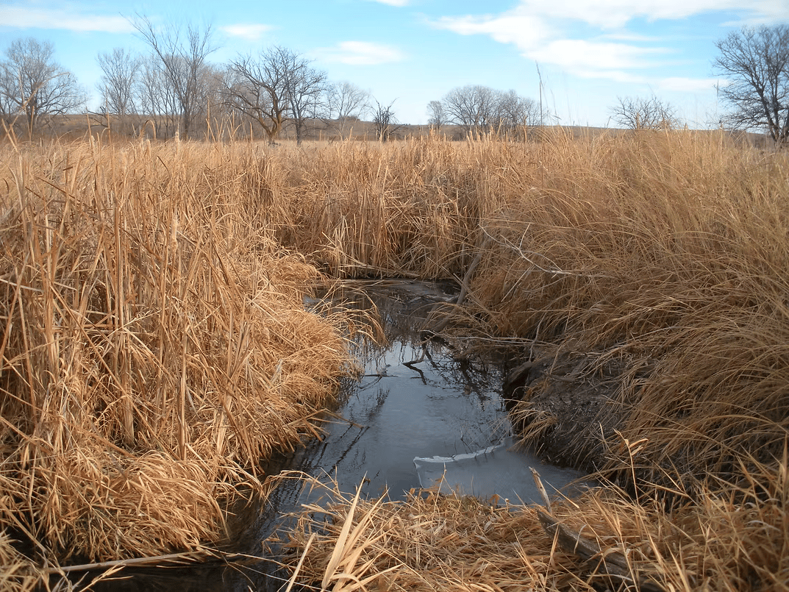

Important Links
Carefully selected resources for trappers, natural resource information, and regional trapping associations.

Quick access to government, conservation, and trapping association websites relevant to Newfoundland and Labrador trappers.
Carefully selected resources for trappers, natural resource information, and regional trapping associations.